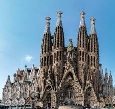
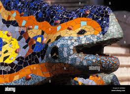

Barcelona's Architect
Antoni Gaudí's incredible buildings bring millions of tourists to Barcelona each year.
Gaudí's non-conformity, already visible in his teenage years, coupled with his quiet but firm devotion to the church, made a unique foundation for his thoughts and ideas. His search for simplicity, based on his careful observations of nature are quite apparent in his work, from the Park Guell and its incredible sculptures and mosaics, to the Church of the Sacred Family and its organic, bulbous towers.
La Sagrada Família

The complicatedly named and curiously unfinished masterpiece that is the Expiatory Temple of the Sacred Family is the most visited building in Barcelona. In it, Gaudí combines his vision of nature and architecture with his devotion to his faith. The Sagrada Família attracts even the non-religious to its doors in large part due to its tragic story and its still unfinished state, of which the everpresent scaffolding and cranes are permanent reminders.
Park Güell

The Park Guell always reminds me of Howard Roark in Ayn Rand's The Fountainhead. Gaudí's project in the Park Guell was to build a residential community whose residents would love where they lived. It was never finished.
Perhaps that is for the best, since now we all get to enjoy it. The Park Guell is set on a hill overlooking practically all of Barcelona. Its beautiful and even comfortable serpentine bench is filled with foreigners and locals alike every day of the week. Its mosaic lizards have become synonymous with the city itself.